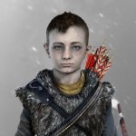
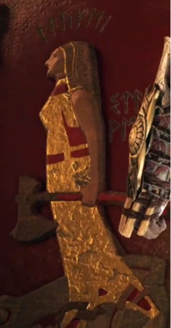
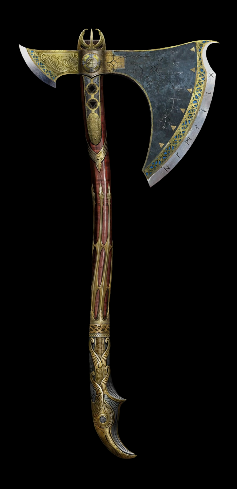
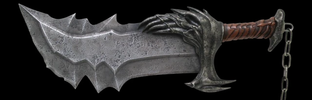
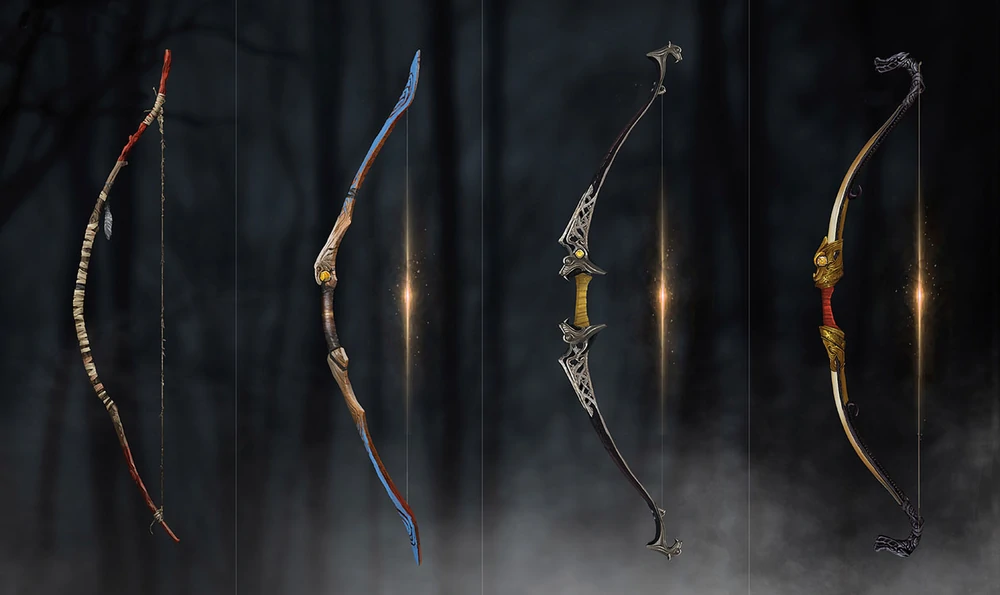
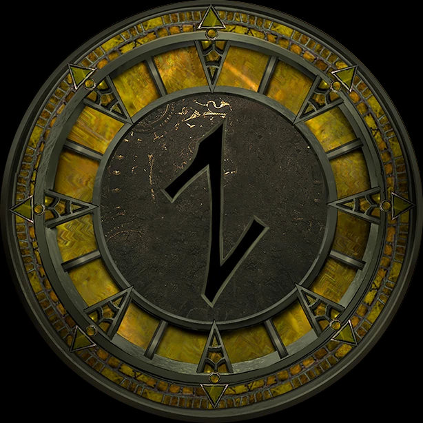

-
Atreus
Kraot's son, Atreus was conceived between the Greek demigod-turned-God of War, Kratos and a Jötunn named Laufey, whom he called Faye. He was a sickly child and only recently grew healthy enough to travel.
-
Laufey
Krato's wife. Laufey the Just, or Faye for short. was a Frost Giant from Jötunheim, the second wife of Kratos and the mother of Atreus.
-
Leviathan Axe
It was forged by the Huldra Brothers, Sindri and Brok. It was made for and given to Laufey who passed it on to her husband Kratos, before her death.
-
Blades of Chaos
The Blades of Chaos are a pair of chained blades that were fashioned by the God of War, Ares. Ares had the blades made for a servant who would prove worthy of being in his service. The blades were the first pair of chained blades that Kratos used
-
Kratos
Atreus's father. Born in Sparta, Kratos was a respected soldier and a Spartan General.Kratos escaped into the world of Norse Gods by settling down in Midgard in Ancient Norway where he married another woman named Faye and bore a son named Atreus.
-
Laufey
Atreus's mother. Laufey the Just, or Faye for short. was a Frost Giant from Jötunheim, the second wife of Kratos and the mother of Atreus.
-
Talon Bow
The Talon Bow is Atreus' primary weapon. The longbow was made out of a yew tree by Atreus' mother, who also taught him how to use it during their practice hunts. She made it larger than usual so he could grow into it. It's used alongside a quiver that holds the arrows.
-
Jotunheim
To the Jötnar, he is known as Loki